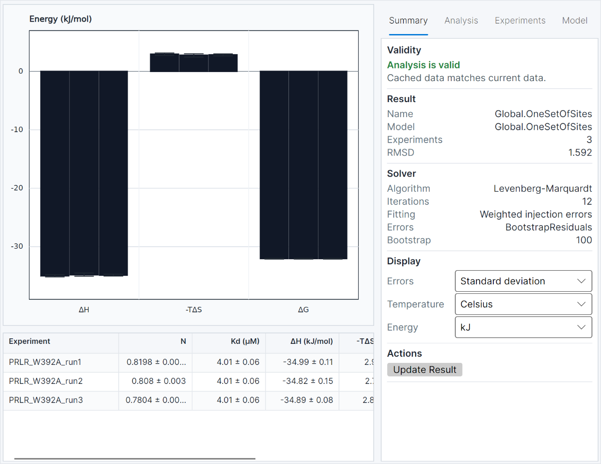

Average parameters
Summarise fitted values across replicates and selected experiments.
Across experiments
FT-ITC Analysis brings related experiments together for global fitting, temperature evaluation and advanced thermodynamic interpretation.
The analysis result
Move from individual fits to a result that makes the relationship between experiments legible. Review shared and experiment-specific parameters, fit quality and residuals without losing the underlying datasets.

Summarise fitted values across replicates and selected experiments.
Examine temperature-dependent behaviour and derived relationships such as ΔCp.
Keep the experiments, assumptions and model choices linked to the final result so you can see how each conclusion was reached.
Uncover hidden patterns and relationships in your data through sophisticated analysis techniques.
Global analysis
Optimise multiple isotherms simultaneously, decide which parameters are shared, and keep other parameters experiment-specific where that is scientifically appropriate.
Analyse experiments collected across temperatures, buffers, salt conditions or replicates as one connected result.
Share selected parameters or connect them through physical relationships while retaining experiment-level values where needed.
Read global parameters together with individual isotherms, residuals and the experiments contributing to the fit.
Advanced analyses
Beyond affinity and enthalpy, carefully chosen series can unravel the underlying thermodynamics.
Temperature-dependent binding measurements can reveal how enthalpy and entropy change across a series. FT-ITC Analysis brings these results together to examine the conformational entropy and structural change associated with binding.
The workflow is based on the Spolar-Record approach: it uses the temperature dependence of binding thermodynamics, including heat-capacity change, to provide a literature-led view of coupled folding and binding. It is a core advanced feature, but its conclusions should always be read with the experimental design and assumptions in view.
Compare a series across ionic strengths to evaluate salt effects on binding and estimate the selected model's extrapolated dissociation constant at zero ionic strength.
Compare titrations performed in buffers with different protonation enthalpies to investigate proton-linked effects on binding.
Further reading
Read the underlying methods and review the assumptions before drawing specialised conclusions.